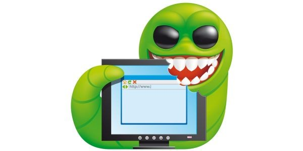
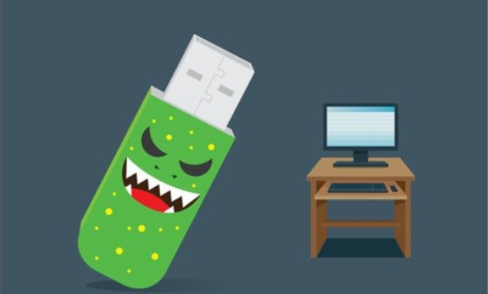
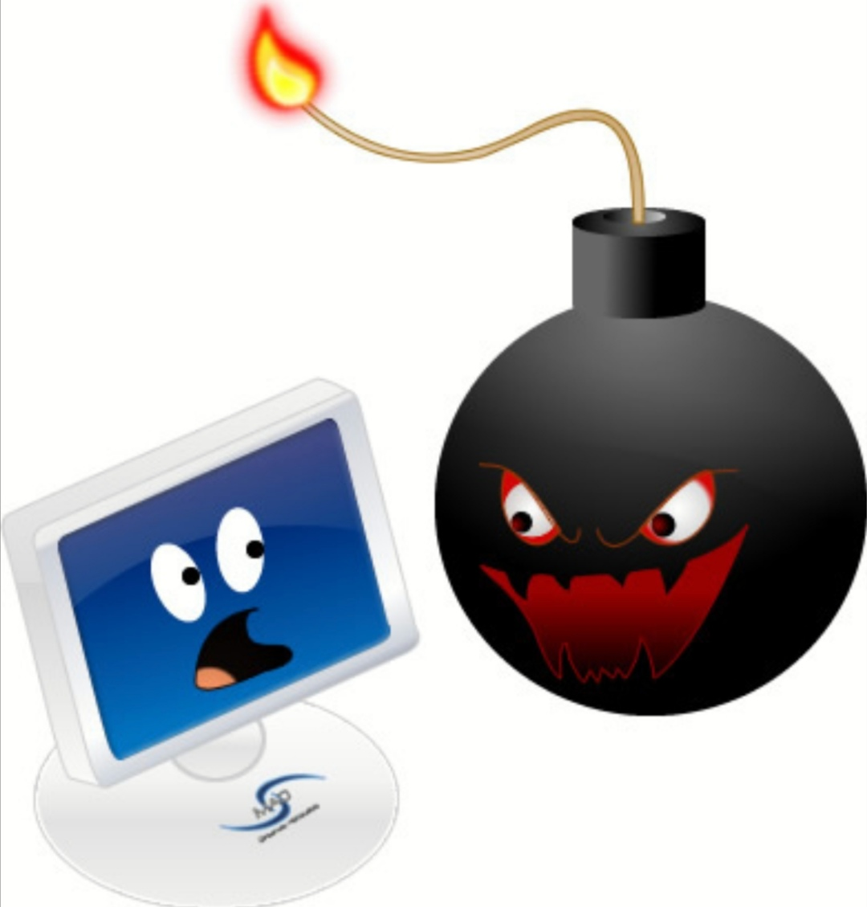
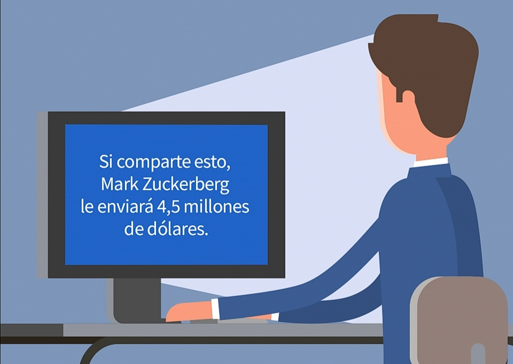
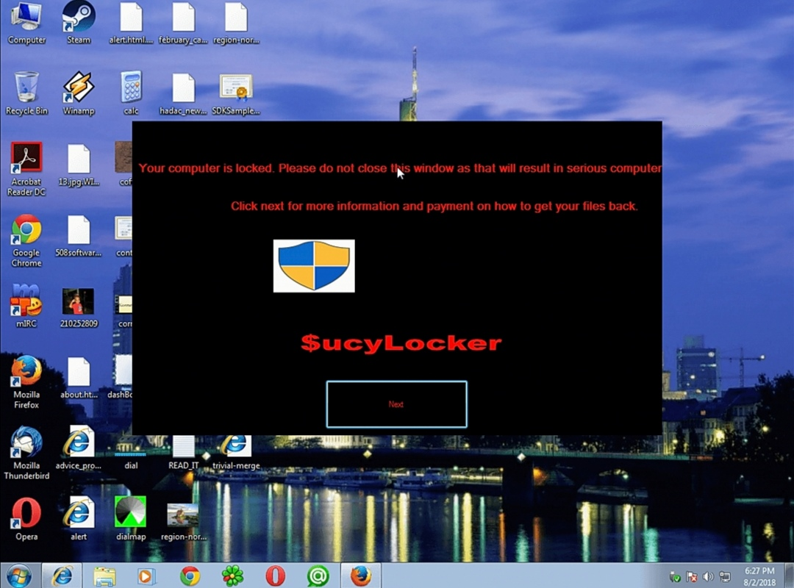
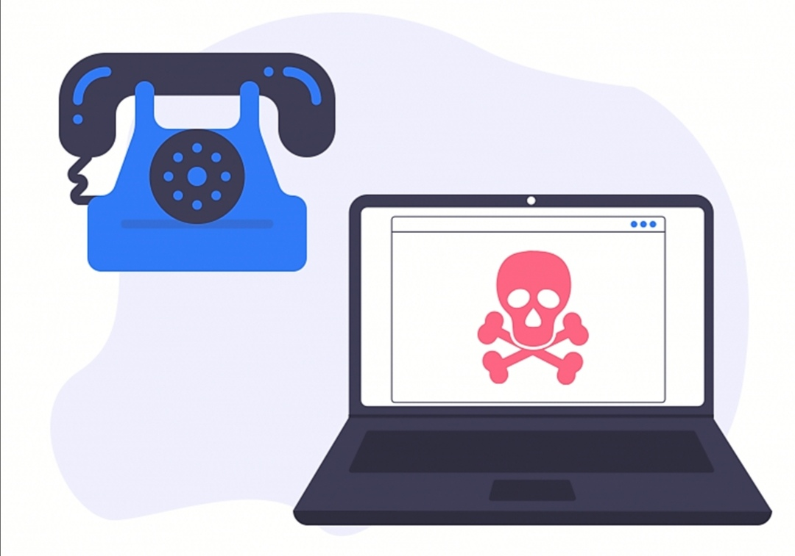
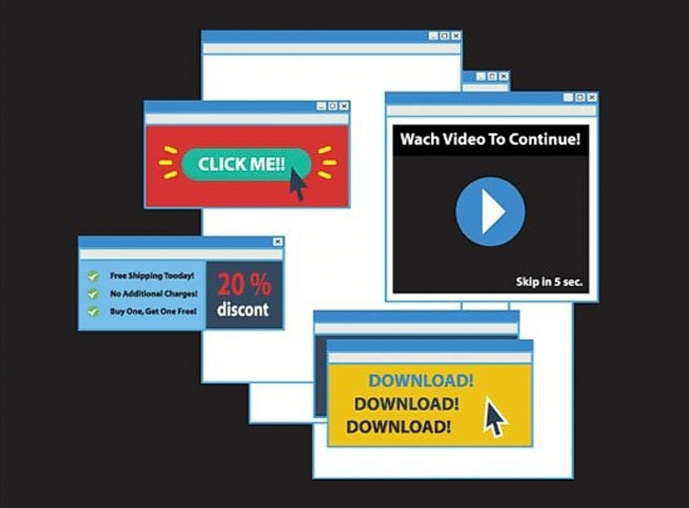
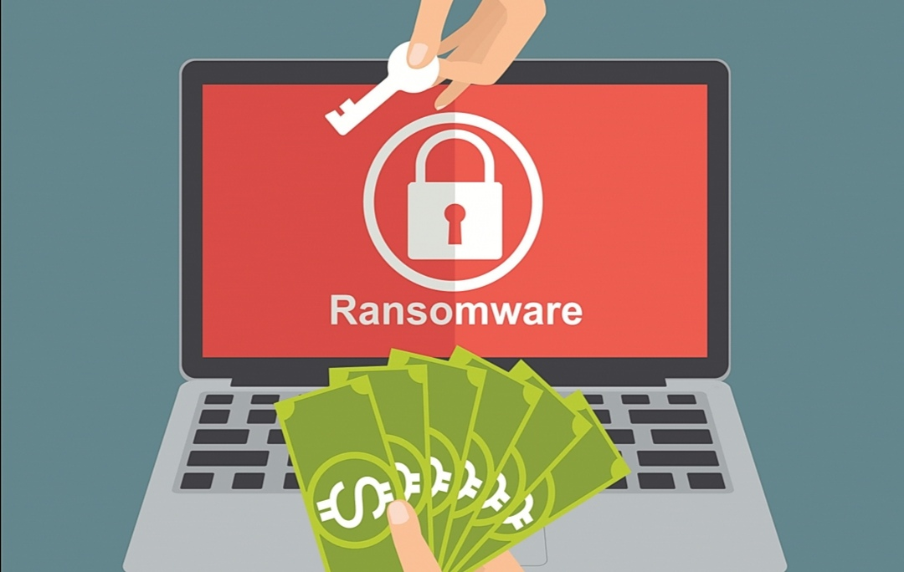
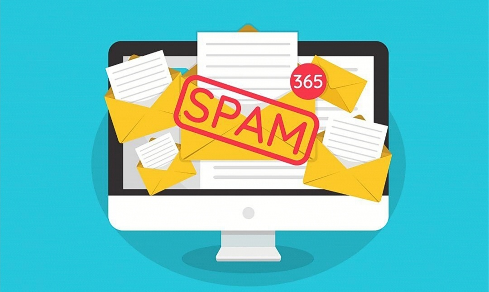

Ejemplos de virus
-
Gusano
-
- Son una subclase de virus, que comparte características con otros tipos de virus. Son programas que realizan copias de sí mismos, alojándolas en diferentes ubicaciones del ordenador.
- Como se propaga: se distribuyen a través de diferentes medios, como el correo electrónico o programas P2P entre otros.
- Efecto: pueden explotar errores de configuración de la red o bien explotar agujeros de seguridad en el sistema operativo y las aplicaciones.
- Como eliminarlo: instalar, actualizar y ejecutar un antivirus gratuito, ya que, si has sido infectado, es posible que no dispongas de ninguno

-
Troyano
-
- Se denomina caballo de Troya, o troyano, a un malware que se presenta al usuario como un programa aparentemente legítimo e inofensivo, pero que, al ejecutarlo, le brinda a un atacante acceso remoto al equipo infectado.
- Como se propaga: se propagan a través de un archivo infectado adjunto a un correo electrónico o se esconden tras una descarga de juegos, aplicaciones, películas o tarjetas de felicitación gratuitos.
- Efecto: permiten a los cibercriminales espiarte, robar tu información confidencial y obtener acceso de puerta trasera a tu sistema.
- Como eliminarlo: Una vez detectado el troyano la manera más fácil y obvia de eliminarlo es usar un antivirus. Para esto se recomienda el AVG
-
Keylogger
-
- Son un spyware malicioso que se usa para capturar información confidencial, como contraseñas o información financiera que posteriormente se envía a terceros para su explotación con fines delictivos.
- Como se propaga: Por lo general, son instalados por personas que tienen acceso a los equipos, en caso de que el administrador de una red desee vigilar de forma completa el manejo de los equipos por los usuarios, o a través de archivos adjuntos que vengan de correos electrónicos de procedencia dudosa.
- Efecto: se sitúa entre el teclado y el sistema operativo para interceptar y registrar la información sin que el usuario lo note
- Como eliminarlo: se puede hacer usando un programa antispyware de confianza. Con el fin de evitar la pérdida de programas legítimos que son importantes para la funcionalidad y estabilidad del PC, se suele recomendar el antivirus Norton
-
Virus de boot
-
- Son virus que infectan sectores de inicio y booteo (Boot Record) de los diskettes y el sector de arranque maestro (Master Boot Record) de los discos duros; también pueden infectar las tablas de particiones de los discos.
- Como se propaga: La forma más común de a infectar un ordenador con un virus boot es a través de dispositivos y memorias físicas. Bien sea disco duros o unidades de almacenamiento como las USB.
- Efecto: Este tipo de virus no infecta ficheros, sino los discos que los contienen. Actúan infectando en primer lugar el sector de arranque de los dispositivos de almacenamiento. Cuando un ordenador se pone en marcha con un dispositivo de almacenamiento, el virus de boot infectará a su vez el disco duro.
- Como eliminarlo: Al verse afectado el sistema de arranque de un disco es posible que sea difícil erradicar el virus. En muchas ocasiones es necesario recurrir a acciones contundentes como hacer un formateo de bajo nivel, o también se podría usar un antivirus de arranque.

-
Virus bomba de tiempo
-
- Son programados para que se activen en determinados momentos, definido por su creador.
- Como se propaga: Mediante la red
- Efectos: Consumo excesivo de los recursos del sistema, rápida destrucción del mayor número de ficheros posibles, ataque a la seguridad del sistema.
- Como eliminarlo: durante el proceso de análisis, tu antivirus detecta un TimeBomb (Bomba de Tiempo), este se dará automáticamente la opción de eliminarlo.

-
Virus de hoax
-
- Es un virus que envía un mensaje que advierte a los destinatarios de una amenaza de virus informático inexistente.
- Como se propaga: Son mensajes de contenido falso que incitan al usuario a hacer copias y enviarla a sus contactos
- Efecto: Su efecto suele ser el de engañar al usuario y en algunos casos permite que otros virus se extiendan sin problemas
- Como eliminarlo: Haciendo uso de algún antivirus de confianza

-
Joke
-
- Son programas ejecutados de manera similar a las acciones de un virus informático en un ordenador, su objetivo no es atacar, sino gastar una broma a los usuarios, haciéndoles creer que están infectados por un virus y que se están poniendo de manifiesto sus efectos.
- Como se propaga: Se propaga atacando direcciones IP, obtenidas aleatoriamente o de la red a la que pertenece el ordenador afectado.
- Efecto: muestra en pantalla falsos mensajes que advierten de la inminente realización de acciones destructivas en el ordenador, simula dichas acciones o realiza modificaciones en la configuración de la pantalla, el ratón, etc.
- Como eliminarlo: el antivirus le dará automáticamente la opción de eliminarlo: hágalo, siguiendo las instrucciones del programa. (Panda por ejemplo)

-
Dealers
-
- Son programas maliciosos que funcionan de la misma manera que los virus regulares de ordenador. Por ello, cambian las configuraciones de red y de marcar sin la aprobación ni el consentimiento de los usuarios.
- Como se propaga: No se difunden como cualquier otro tipo de malware. En la mayoría de los casos, la gente los instala en el sistema como cualquier otro programa. Esto puede hacerse tanto con como sin el consentimiento del usuario.
- Efecto: Usar el ordenador comprometido para conectarse a números de teléfono de alto coste, promocionar sitios webs potencialmente inseguros con contenido publicitario, pornográfico o similar.
- Como eliminarlo: pueden encontrarse y ser eliminados con la ayuda de un programa anti-spyware de confianza

-
Adware
-
- Es un software no deseado diseñado para mostrar anuncios en su pantalla, normalmente en un explorador.
- Como se propaga: Descargar un programa (normalmente freeware o shareware) que instala el adware sin que se dé cuenta y sin su permiso.
- Efecto: El adware genera beneficios a su programador desplegando automáticamente anuncios en la interfaz de usuario del software o en la pantalla emergente que salta durante el proceso de instalación.
- Como eliminarlo: descárgue un programa de seguridad informática legítimo; por ejemplo, Malwarebytes for Windows

-
Ransomware
-
- Es un tipo de programa dañino que restringe el acceso a determinadas partes o archivos del sistema operativo infectado y pide un rescate a cambio de quitar esta restricción.
- Como se propaga: Normalmente un ransomware se transmite como un troyano o como un gusano, infectando el sistema operativo.
- Efectos: Secuestra los datos y pide un rescate.
- Como eliminarlo: descargar un producto de seguridad conocido para la desinfección y ejecutar un análisis para eliminar la amenaza. Puede que no recupere todos sus archivos, pero puede estar seguro de que la infección se ha solucionado.

-
Phishing
-
- Es un término informático que distingue a un conjunto de técnicas que persiguen el engaño a una víctima ganándose su confianza haciéndose pasar por una persona, empresa o servicio de confianza, para manipularla y hacer que realice acciones que no debería realizar.
- Como se propaga: En este tipo de ataque se realiza la propagación de mensajes de phishing mediante el uso de malware. Por ejemplo, la cuenta de Facebook de una víctima que instaló una aplicación de Facebook no autorizada, envía automáticamente mensajes a todos los amigos de la víctima.
- Efectos: oscilan entre la pérdida del acceso al correo electrónico a pérdidas económicas sustanciales.
- Como eliminarlo: la detección de este tipo de enlaces web debería ocurrir de forma manual. Si tiene dudas de que una página web es el phishing o simplemente quiere comprobar tales páginas.
-
Spam
-
- Hace referencia a los mensajes de correo electronico no solicitados, no deseados o con remitente no conocido, habitualmente de tipo publicitario, generalmente son enviados en grandes cantidades.
- Como se propaga: Aunque se puede hacer spam por distintas vías, la más utilizada entre el público en general es la basada en el correo electrónico.
- Efectos: Más allá de la molestia y el tiempo que se pierde a causa de los mensajes no deseados, el spam puede causar daños significativos, infectando las computadoras de los usuarios con software malicioso capaz de dañar los sistemas y robar información personal. También puede consumir recursos de la red.
- Como eliminarlo: Haciendo uso de software anti-Spam.

-
Pop-Ups
-
- Hace referencia a un elemento publicitario que aparece automáticamente en la pantalla del navegador, en una ventana superpuesta a la de la página web activa.
- Como se propagan: Se distribuyen mediante el engaño. Los desarrolladores las empaquetan en asistentes de otro software. Quiere decir que se instalan junto con otros programas.
- Efectos: si se hace clic, esos anuncios, bien ocasionan redireccionamientos a sitios web ocultos, o bien inician la instalación de apps no deseadas. Cuantos más anuncios se muestren, más desarrolladores de adware generan beneficios.
- Como eliminarlo: Combo Cleaner es una herramienta profesional para eliminar software malicioso de forma automática y está recomendada para acabar con los anuncios en ventanas emergentes.
Regresar.